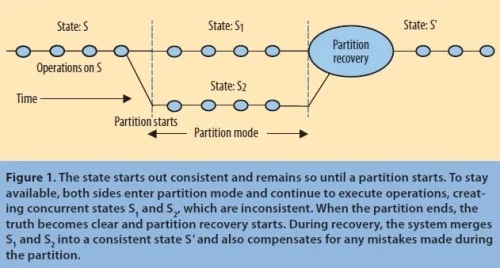
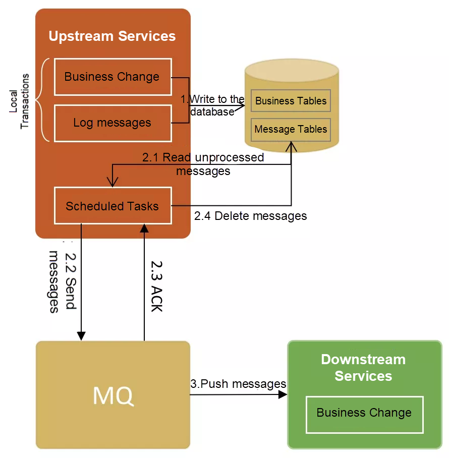
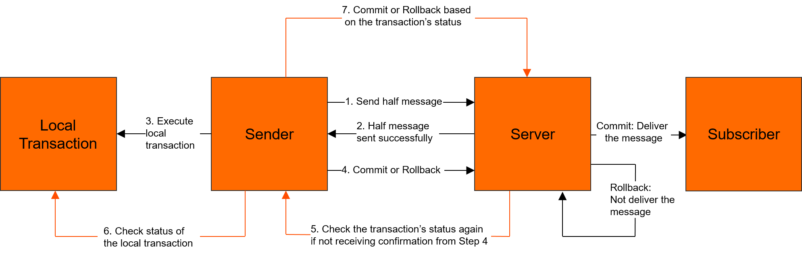

分布式事务
问题定义
对经典的电商场景而言：下单是个插入操作，扣减金额和库存是个更新操作，操作的模型不同，如果进行分布式的服务拆分，则可能无法在一个本地事务里操作几个模型，涉及跨库事务。
CAP 定义
根据 Eric Brewer 提出的 CAP 理论：
- Consistency：All Nodes see the same data at the same time。所有节点看到同一份最新数据。Brewer 论文里的 C 严格定义是 linearizability，工程语境下常被泛化为 strong consistency。
- Availability：Reads and writes always succeed。非故障节点必须在合理时间内响应。
- Partition tolerance：System continues to operate despite arbitrary message loss or failure of part of the system。网络分区时系统继续运行。在云原生环境（K8s 跨可用区、跨 region）这是默认前提，不是可选项。
由此诞生三种设计约束和取舍方向：
- CA：放弃 P，只能在单机系统上成立，比如不带复制的单实例 MySQL。一旦做了多节点复制（主从、集群），网络分区就不可避免，CA 这一档就不存在了。
- AP：放弃强一致性，保证高可用。Cassandra、DynamoDB。Gossip 协议可实现最终一致性。
- CP：放弃可用性，保证强一致性与分区容错。ZooKeeper (ZAB)、etcd (Raft)、2PC。Paxos 在 Multi-Paxos 优化下，把每次提案的 prepare 阶段从两轮压成一轮，主要是降延迟，吞吐提升是延迟下降的副作用。
在分布式场景下，网络分区不可避免。网络分区带来一个不可解决的基本问题：执行本地事务的一个节点，无法确知其他节点的事务执行状况。
- 在CP系统中：节点会阻塞操作（如Raft的Leader选举），直到确认多数节点状态，可以确知集群状态。
- 在AP系统中：节点继续响应请求但不保证数据一致性，（如Gossip传播延迟）。
CAP 定理的证明思路
Gilbert 和 Lynch 在 2002 年的论文中给出了 CAP 猜想的形式化证明，反证如下：
- 假设系统同时满足 C、A、P 三个特性。
- 构造网络分区：将系统分为 G1 和 G2，二者无法通信。
- 客户端向 G1 写入新值 v1。
- 另一客户端向 G2 发起读请求。
- 推导矛盾：
- 因 P，G1 无法把 v1 同步到 G2。
- 因 A，G2 必须响应读请求。
- 因 C，G2 必须返回最新值 v1。
- 但 G2 不知道 v1 存在，无法返回 v1。
结论：网络分区必然发生时，系统只能在一致性和可用性之间二选一。
常见误解
CAP 推出后被广泛简化成"三选二"，这个简化把整套设计哲学压缩成一个口号，副作用是误导。Brewer 自己 2012 年在 《CAP Twelve Years Later》 里专门做了纠偏，下面把核心几条整理出来。
三选二是过度简化
CAP 原始陈述只封闭了一小片设计空间——分区时同时拥有完美 C 和完美 A。但分区在大多数时间根本不发生，没分区的时候系统当然可以同时拥有 C 和 A，根本不需要"放弃"。把 CAP 当成永恒的三选二，等于把一个边界条件下的取舍误读成了系统设计的总纲。
更要紧的是，C 和 A 都是连续光谱不是开关：可用性是 0 到 100 之间的百分比，一致性也分线性、顺序、因果、最终等档位，连"分区是否发生"本身都常有争议。"三选二"的二元论从一开始就不成立。
C 和 A 之间的选择不是一次性的
同一个系统在不同子模块、不同数据、不同时间段会反复在 C/A 之间切换。极端例子：
- Yahoo PNUTS：异步维护远端副本，把主副本放在用户附近，单用户场景下不一致几乎无感，延迟反而下降。
- Facebook 反向操作：主副本固定在一个地方，用户更新走主副本保证短期可见性，20 秒后流量切回附近副本，副本那时也已收敛。
两个公司同样面对跨地域延迟，做出了相反取舍——这正说明 C/A 不是教条，而是按业务读写比、用户分布、可观察一致窗口算账后的工程决策。
分区是"超时"而不是"断网"
工程上，分区不是物理意义的"网线被拔了"，而是"在业务允许的超时窗口内，多数派没能完成一次往返通信"。这是 CAP 在生产语境的关键转译：
只要在业务允许的最大响应时间内，无法让"大多数"相关节点完成一次往返通信，系统就视为"分区"。
由此推出几个工程结论：
- 分区不是全局概念。同一时刻，A 节点可能视自己为分区状态，B 节点可能没察觉，因为它们看到的超时窗口、对端集合不同。
- 重试只是把决策推后，不能消解 C/A 的取舍。无穷重试本质上是"宁愿不可用也要等到一致"，等价于选择 C、放弃 A。
- 多数生产系统的默认策略是先 C 后 A——超时之前不返回，超时之后才进入分区模式做降级决策。
应对分区的三步流程
不论选什么档位，分区一旦真的发生，应对策略基本是固定的三步：
- 检测分区：靠业务超时 + 多数派往返判断。
- 进入分区模式：显式标记当前进入受限状态，限制部分会破坏不变性的操作。
- 分区恢复：通信恢复后，先合并状态，再补偿在分区期间产生的错误。
后面 CAP 工程流程速查表 给的是这三步的可执行版本。这里只把每一步的核心决策说清楚。
管理分区：操作 × 不变性 交叉表

进入分区模式后，要决定哪些操作可以继续、哪些必须限制。这个判断的依据是系统要保护的不变性——不是所有不变性都需要在分区期间死守。
- 可以冒险的不变性：例如"主键唯一"。允许分区期间出现重复键，恢复时检测到再合并。代价低、收益是分区期可用性。
- 必须守住的不变性：例如"信用卡扣款不能重复"。这种带外部副作用的操作，在分区期间应该记录意图，推迟执行——用户感受到的只是"订单稍后处理"，对 A 的损失几乎为零。
工程上的实操是拉一张"操作 × 不变性"的交叉表，逐格判断每个操作对每个不变性是否有破坏潜力，对有破坏潜力的操作选择禁止、推迟、或修改三选一。这一步比写代码重要得多。
至于分区两侧操作历史的追踪，用版本向量（version vectors）能区分哪些更新有先后因果、哪些是并发——并发更新就是冲突，需要恢复阶段处理。Brewer 的论文也指出：因果一致性是聚焦可用性的设计者能拿到的最强一致性档位。
分区恢复：状态合并 + 错误补偿
恢复阶段要做两件事：把分区两侧的状态合并到一致，然后补偿分区期间已经外化的错误。
状态合并有几种思路：
- 回放日志：从分区时刻起按确定性顺序重放，达到统一状态。Bayou、CVS、Git 的合并逻辑都属于这一类。
- 限制为可合并操作：分区期间只允许会自动合并的操作（比如 Google Docs 限制了一部分操作类型），让恢复阶段无人工冲突。
- CRDT（Conflict-free Replicated Data Type）：Marc Shapiro 在 INRIA 提出的数据结构，被证明在分区后必然收敛。最经典的例子是亚马逊购物车——分区两侧购物车的并集就是收敛值，副作用是已删除商品可能复活。CRDT 的局限是只能处理"本地可验证的不变性"，全局约束（比如总余额≥0）做不了。
错误补偿比状态合并更难，因为它要面对分区期间已经外化到现实世界的副作用——发出去的邮件、扣过的款、出过的票，没法靠"回滚日志"撤销。补偿的几条策略：
- 以最后写入为准（LWW）：粗暴但简单，损失部分更新。
- 业务合并：智能地把多个并发更新合到一起。
- 机票超售：登机过程其实就是分区恢复——发现实际乘客超过座位，就靠现金补偿、改签把不变性"事后修复"。
- 重复下单：能识别出重复下单的，自动取消其中一笔加发优惠券致歉；识别不出来的，问题就只能落到客服或客户头上。
ATM 机的取款限额就是上面这套理论的产品级落地。基本不变性是"账户余额 ≥ 0"，分区时 ATM 不知道真实余额，理论上应该禁止取款（损失 A），但银行选择"分区模式下限取款额（比如单笔 200 美元）"——既保住了 A，又把不变性破坏的风险锁在小范围内。即便最终发生透支，银行靠手续费和事后追讨补偿。也就是说，银行系统的正确性从来不依赖一致性，而是依赖审计和补偿。
补偿的本质是 Saga 事务（后面会展开）：把长事务拆成一连串子事务，每个子事务都备好对应的补偿事务。补偿不要求严格的可串行化，要求的是净效果等价——比如"扣款后退款"和"从未扣过款"在账面上等价，对客户也等价（虽然带短暂的体感不一致）。
结语
CAP 不是非黑即白的三选二，而是一组在分区时刻进行的工程取舍。没分区时尽量同时优化 C 和 A，分区时按"操作 × 不变性"交叉表显式限制操作并记账，恢复时合并状态并补偿外化错误。版本向量、CRDT、补偿事务是这套方法的基础工具，但具体策略重度依赖业务自身的不变性结构——没有银弹，有的是判断力。
CAP 工程流程速查表
CAP 不是宗教，而是工程流程：
先给超时 → 进分区模式 → 限制+记账 → 用 CRDT/版本向量收敛 → 最后补偿错误
把“三选二”变成“分区时最大化可用，恢复时最大化一致”。
1. 把"分区"当成限时通信问题，而非断网
- 给每一次写操作设 业务超时（SLA）
- 超时前凑不够多数派 → 立即进入分区模式
- 超时未到 → 继续重试，不急着二选一
2. 进入分区模式后，显式限制操作（而非直接降维）
| 步骤 | 动作 |
|---|---|
| 梳理 | 拉出“操作 × 不变性”交叉表 |
| 限制 | 推迟 / 限额 / 记录意图 |
| 记账 | 外部化操作（扣款、下单、发邮件）必须先记日志，留待恢复阶段补偿 |
3. 分区期间两侧都跑原子操作，但不跑全局事务
- 单侧仍用 本地 ACID 事务，保证可回滚
- 放弃跨区锁、跨区可串行化——锁不住，也等不起
4. 用版本向量或 CRDT 记录因果，让状态自动收敛
| 工具 | 作用 |
|---|---|
| 版本向量 | 判断哪些更新并发，哪些有序 |
| CRDT | 并发更新数学可合并，恢复阶段无需人工冲突解决 |
| 目标 | 恢复时只需“取最大值 / 并集”即可得到一致状态 |
5. 恢复阶段两步走：先合并状态，再补偿错误
① 合并状态
- 回滚到分区快照 → 按因果顺序重放操作 → 得到全局一致 S′
- 或直接用 CRDT 收敛函数一次性算出 S′
② 补偿错误
- 对已外部化的结果（多扣款、超售、重复邮件）发起反向业务动作
- 补偿本身也是事务，必须可重试、可审计、对用户可见（退款、优惠券、致歉信）
一句话带走
CAP 不是非黑即白，而是“超时+限制+记账+收敛+补偿”的五步曲。
按流程落地，就能在分区时尽量保持可用，恢复时尽量还原一致，避免拍脑袋砍功能。
BASE 定义
BASE 是 Dan Pritchett（eBay 架构师）2008 年在 ACM Queue 上提出的，与 ACID 相对的一组分布式系统设计原则：
- Basically Available（基本可用）：系统在出现不可预知故障时，允许损失部分可用性，但核心功能仍然可用。
- 现代例子：电商大促时商品详情页降级（隐藏推荐位、关闭评论）、首页只读不写；微博热搜爆掉时切换到精简版；K8s 节点失联时被驱逐但集群继续工作。
- Soft state（软状态）：允许系统中存在中间状态，且这些中间状态不会影响系统整体可用性。多副本之间允许有数据同步延迟。
- 现代例子：Redis Cluster 主从复制的短暂窗口；CDN 边缘节点回源前的旧缓存；Elasticsearch refresh_interval 控制的可见性延迟。
- Eventual consistency（最终一致性）：所有数据副本经过一段时间后，最终能达到一致。
- 现代例子：Amazon S3 跨区复制的最终一致；微信朋友圈"已发表，对方稍后可见"；GitHub Actions 触发后状态延迟刷新。
BASE 不是 ACID 的反义词，而是同一谱系的不同档位——ACID 强调强一致+原子+隔离+持久，BASE 强调可用+柔性+最终一致。现实系统经常在不同子模块上同时使用：交易、账户走 ACID（MySQL/PostgreSQL），购物车、推荐、行为日志走 BASE（DynamoDB/Cassandra/Kafka）。
一致性模型光谱
一致性不是非黑即白，而是一个连续光谱。从强到弱排列：
强一致性（Strong / Linearizable）
任一更新一旦成功返回，后续从任意副本的读操作立即拿到最新值，系统内不存在外界可观察的中间状态。Lamport 把它叫 linearizability——存在一个全局实时序，所有操作"像在单机上原子执行"。
- 代价：高延迟、低可用性，跨地域部署时尤其明显。
- 现代系统：
- ZooKeeper / etcd：用 ZAB / Raft，常用于配置中心、leader election。
- Google Spanner / CockroachDB / TiDB：靠 TrueTime（原子钟+GPS）或 HLC 把跨区线性化做到了商用级别。
- Redis WAIT 命令：可让客户端等到多数副本确认后才返回，逼近线性一致。
- 例子：支付扣款后任意节点查余额都是已扣减值；Kubernetes 的 etcd 里某个 leader lease 一旦写入，所有 controller 立即看到。
顺序一致性（Sequential）
所有客户端看到的操作顺序一致，但这个顺序不必反映物理时间。允许"全局有一个人为的统一排序"，比 linearizable 弱在不要求实时。
- 现代系统：
- Java Memory Model（JMM）下的 volatile / synchronized：单变量上的写入对所有线程顺序一致。
- x86 TSO 内存模型：每个 CPU 看到的写入顺序一致，但不保证全局实时。
- Kafka 单分区：分区内消息的顺序对所有消费者一致，但分区之间无保证。
- 例子：所有消费者看到 partition-0 上 msg-1、msg-2、msg-3 的顺序一定相同。
因果一致性（Causal）
有因果关系的操作（A 写完 B 读了再写）保持顺序，无因果关系的并发操作可以乱序。比顺序一致性更弱，比最终一致性更强。
- 实现工具：版本向量（version vectors）、HLC（Hybrid Logical Clock）。
- 现代系统：
- Azure Cosmos DB：5 种一致性级别中显式提供 “Consistent Prefix” 和 “Session”，前者就是因果一致的工程化版本。
- MongoDB Causal Consistency Sessions：4.0 起在 ClientSession 上保证读到自己写、单调读。
- Riak：用 dotted version vector 处理并发更新。
- 例子：评论必须出现在它回复的帖子之后；同一个用户在手机和 PC 上看到的自己操作顺序一致。
弱一致性（Weak）
写成功后不承诺何时、甚至是否能读到最新值，中间状态可能被看到也可能看不到。
- 现代例子：
- 刚发的微博，自己刷新有时可见有时不可见；不同好友看到的时间点不同。
- CDN 边缘节点的页面缓存：源站更新了，边缘节点要等 TTL 过期或主动 purge 才看得到。
- 浏览器 Service Worker 的本地缓存：刷新时可能拿旧版本。
最终一致性（Eventual）
弱一致性的特例：保证在有限且确定的时间内所有副本收敛到同一最新值（liveness），收敛后不再回退（safety）。
- 现代系统：
- Amazon S3（2020 年起强读后写一致，跨区复制仍是最终一致）。
- Amazon DynamoDB（默认最终一致读，可选强一致读）。
- Cassandra / ScyllaDB：通过 read-repair、hinted handoff、anti-entropy 后台收敛。
- DNS：TTL 控制全球收敛时间。
- 例子：朋友圈点赞数在不同设备上短暂不一致；S3 跨区域复制后最终所有 region 看到同一对象；GitHub fork 后的仓库列表延迟刷新。
光谱总览：
1 | |
分布式事务的核心设计模式
不管 2PC、TCC、Saga 还是消息方案，都是在解决同一件事：网络分区和节点故障下，多节点操作的原子性。看清这一点之后，下面这套统一的角色抽象就好理解了——所有方案都在它之上做演化。
概念分类与角色定义
| 概念 | 定义 | 类比理解 |
|---|---|---|
| 事务（Transaction） | 作为单个逻辑工作单元执行的操作序列，要么全成功，要么全失败 | 数据库的 BEGIN/COMMIT/ROLLBACK |
| 分布式事务 | 事务的各要素（发起者、资源、协调者）分布在不同网络节点 | 跨多个数据库或服务的事务 |
| 柔性事务 | 在 CAP 约束下的妥协方案，追求最终一致性而非实时一致性 | BASE 理论的实践（Basic Available, Soft state, Eventual consistency） |
| 全局事务 | 逻辑概念，包含多个分支事务的统一上下文 | 事务的"根"，持有全局状态 |
| 分支事务 | 全局事务的子单元，对应单个服务或数据库的本地事务 | 事务的"叶节点" |
| 发起方（Launcher） | 启动全局事务的入口服务，决定最终提交或回滚 | 事务的"指挥官" |
| 参与者（Participant） | 被调用并提供分支事务服务的服务 | 事务的"执行者" |
| 事务管理器（TM） | 独立服务，控制事务生命周期，持久化事务状态 | 事务的"大脑" |
| 事务协调器（TC） | 执行提交/回滚命令的模块，可内嵌或独立部署 | 事务的"传令官" |
| 资源管理器（RM） | 管理具体资源（数据库、消息队列等）的适配层 | 事务的"手" |
这里值得多说一句的是资源抽象——不管下层是数据库连接、MQ 生产者还是 HTTP 接口，事务管理器只关心抽象出来的"资源状态转换协议"，对接谁不关心。这和操作系统的设备驱动抽象同构：上层只面对统一接口，下层各搞各的实现。
为什么需要这些角色？
这种分层架构解决了分布式系统的两个根本问题：
- 故障检测与恢复：TM 持久化事务状态，即使进程重启也能恢复未完成的决策
- 并发控制：TC 协调多个 RM 的执行顺序，避免竞态条件
sequenceDiagram
participant TM as TM (事务管理器)
participant TC as TC (事务协调器)
participant RM1 as RM (资源管理器1)
participant RM2 as RM (资源管理器2)
Note over TM: 业务方法开始
TM->>TC: 1. 开启全局事务
TC-->>TM: 返回全局事务ID(XID)
Note over TM, RM1: 业务操作
TM->>RM1: 2. 执行分支事务(携带XID)
RM1->>TC: 3. 注册分支事务
RM1-->>TM: 执行成功
TM->>RM2: 4. 执行分支事务(携带XID)
RM2->>TC: 5. 注册分支事务
RM2-->>TM: 执行成功
Note over TM: 根据业务结果决策
TM->>TC: 6. 提交/回滚全局事务
TC->>RM1: 7. 提交/回滚分支事务
TC->>RM2: 8. 提交/回滚分支事务
RM1-->>TC: 完成
RM2-->>TC: 完成事务模型
2PC
当代的 2PC 有两种典型实现：一是 XA 规范——X/Open 组织定义的分布式事务标准，规定了事务管理器（TM）和资源管理器（RM）之间的接口，其内部使用 2PC 作为提交协议，Java 里对应 JTA 的 UserTransaction 与 XAResource；二是谷歌 Percolator——基于 BigTable 时间戳与单行原子操作做 2PC，把协调状态持久化在数据本身。
简单说，2PC 是算法，XA 是把这个算法做成工业标准的接口规范，两者不在同一层。
XA 事务简述
对于经典的 XA 事务，二阶段提交协议，即将事务的提交过程分为两个阶段来进行处理：准备阶段和提交阶段。事务的发起者称协调者（coordinator），事务的执行者称参与者（participant）。当一个事务跨多个节点时，为了保持事务的原子性与一致性，需要引入一个协调者（Coordinator）来统一掌控所有参与者的操作结果，并指示它们是否要把操作结果进行真正的提交或者回滚。
2PC 的 Failover
Safety：不会出现一个 participant 提交一个 participant 回滚的情况，即无矛盾态。
Liveness：最终一个分布式事务处于全局提交或者回滚的状态，即无悬垂态（2PC 中的阻塞操作可能引发异常等待）。
一个典型的 2PC 的例子
一个 TC 的主要操作有： 对 participant prepare、对 participant confirm、对 participant abort/cancel。
一个 participant 的主要操作有：返回 ok，返回 not ok，返回 commit 成功，返回 commit 失败，返回 abort/cancel 成功，返回 abort/cancel 失败。

节点超时和宕机会严重降低系统的整体吞吐量。节点中要不断引入重试才能度过各种各样的宕机的困难。
如果没有重试和超时，则任一 participant 节点失灵，都可能导致已经做了 pre-commit 的其他 participant 永久 hang 住（阻塞单点），因为 coordinator 会收集不到足够的签名（vote/ballot）而 hang 住。
而如果 coordinator hang 住，结果会更糟，因为再起一个 coordinator 也无法让 hang 住的节点真正提交或者回滚。
这两种情况都是死锁，只有超时检测 + cancel 操作能解决这个问题（见下方的 TCC）。
中心化和去中心化的 2PC
如果存在一个没有业务逻辑的 coordinator，则这种 2PC 是中心化的；如果某个 participant 自己带有
coordinator 的职能，则这种 2PC 可以认为是近于去中心化的。
把 coordinator 的代码“塞”进某个 participant 进程里，决策权仍然唯一，崩溃后其他节点依旧无法自决，本质上还是单点；只是“物理部署”上的同进程，并未解决 2PC 的中心化故障域问题。真正的“去中心化 2PC”需要共识协议（Paxos/Raft）选出新 coordinator，让多数节点能共同决定提交或回滚，否则仍属于中心化 2PC的变种。
2PC 总结
2PC 简单易懂、能保证原子性，但同步阻塞 + 单点故障 + 低吞吐决定它只适用于 低频跨库事务（如订单-支付核心链路）或 内部 XA 场景；
高并发长链路业务请改用 TCC / Saga / 本地消息表 等柔性方案，或直接用 Paxos/Raft 共识协议替代 coordinator。
JTA 的编程模型
1 | |
XA 的局限性
| 局限 | 说明 | 影响 |
|---|---|---|
| 同步阻塞 | prepare 阶段需等待所有 RM 响应 | 延长锁持有时间，降低并发 |
| 单点故障 | TM 宕机会导致悬挂事务 | 需要复杂的恢复机制 |
| 性能瓶颈 | 两次网络往返 + 磁盘刷盘 | TPS 通常低于单机事务的 30% |
| 资源锁定 | prepare 后 RM 锁定资源不可释放 | 长事务极易造成死锁 |
正是这些局限催生了柔性事务方案（TCC、Saga、消息事务）。
3PC

这幅图的出处在这里。
三个阶段：CanCommit -> preCommit -> doCommit
第一阶段CanCommit ≈ 可行性预检（无锁）
第二阶段PreCommit ≈ 真正加锁 + 写日志。
第三阶段协调者指示手动提交。
3PC 完整时序与超时行为
-
CanCommit（阶段 1）
- 协调者询问所有参与者 “能否提交？”
- 参与者仅做语法/权限/容量检查，不申请锁、不预扣资源、不写日志
- 超时：任一节点无响应 → 协调者直接 abort
- 作用：提前过滤失败请求，减少后续锁占用时间，并不能解决网络分区或协调者宕机导致的不一致
-
PreCommit（阶段 2）
- 协调者收到 全局 Yes 后，广播 preCommit
- 参与者动作：
- 申请本地排他锁（预扣资源）
- 写 undo/redo 日志 并刷盘
- 向协调者回复 ACK
- 超时行为：
- 协调者侧超时（未收齐 ACK）→ 发送 abort
- 参与者侧超时（迟迟等不到 preCommit 或 abort）→ 仍保持阻塞，不会自提交；只有收到 preCommit ACK 且 阶段 3 报文全丢失时才进入下一条规则
-
DoCommit（阶段 3）
- 协调者收齐阶段 2 ACK 后，广播 doCommit
- 参与者收到即：释放锁、刷盘、返回成功
- 超时行为：
- 协调者超时 → 重试或向上层报错，已发 doCommit 视为成功
- 参与者超时（等不到 doCommit/abort）→ 自提交（关键！）
前提：它已收到并处理过 PreCommit——一个节点能进入 PreCommit，意味着协调者已经看到了所有节点对 CanCommit 的 Yes，全局可提交意图已经成立，因此即使后续 DoCommit/abort 都丢了，自提交也是安全的（只要网络分区不出现奇怪情形）。
总结：
- 加锁 + 预扣资源 + 写日志仅发生在 PreCommit
- 自提交仅出现在 阶段 3 参与者超时且已进入 PreCommit 状态的场景
- 阶段 1、2、3 都给协调者设超时；阶段 3 给参与者再设一次超时，用以缓解（而非根除）2PC 的无限阻塞
- 前提一旦被打破（全局 Yes 不成立或 PreCommit 广播失败），自提交就可能导致部分提交 / 部分回滚——3PC 只是降低死锁概率，并未消除不一致风险
需要说明的是，3PC 在生产系统里几乎没有真正铺开使用——它假设的"网络最终可达 + 节点最终响应"在云上根本不成立，多一轮通信带来的延迟换不回多少安全性。现代分布式系统宁可走另一条路：用 Paxos / Raft 共识协议替代 coordinator 的单点角色，多数派决策天然带容错。代表如 Google Spanner、CockroachDB、TiDB、etcd、Consul 等，都没有选择 3PC 这条路。3PC 在工程上的价值更多是作为 2PC 的对照样本，帮助理解"为什么阻塞问题不能简单靠加阶段解决"。
TCC

TCC 分布式事务详解
角色
- 业务应用：事务发起方，负责调用 Try / Confirm / Cancel
- 事务协调器（可内嵌或独立）：记录事务状态，按结果调度 Confirm / Cancel
- 参与服务（库存、钱包等）：提供对应 TCC 接口，真正的资源在其本地
协调器调用模式的灵活性
TCC 规范只定义三个语义接口和幂等补偿原则，不强制要求调用权归属：
-
内嵌协调器模式：
- 业务进程自己记录事务状态
- 发起方直接调用 Try → Confirm/Cancel
- 无额外协调器进程（如 Seata 的 @LocalTCC、ByteTCC）
-
独立协调器模式：
- 发起方只调用 Try，提交事务 ID 给独立 coordinator
- Coordinator 负责后续批量/定时调用 Confirm/Cancel
- 适合多服务、长链路场景
-
混合驱动模式：
- Try 由发起方同步调用
- Confirm/Cancel 可通过本地定时任务、消息队列或 server 回调触发
- 只需保证至少一次调用 + 接口幂等性
参与者接口要求
每个参与服务必须实现三个幂等接口：
1 | |
三阶段语义
1. Try（阶段 1 → 业务层 “prepare”）
- 做一致性校验（库存是否足、余额是否够）
- 预扣资源（冻结库存、冻结金额）→ 本地锁 + 业务状态机，不写最终业务数据
- 返回结果给协调器；失败立即触发全局 Cancel
2. Confirm（阶段 2 → 提交）
- 不再做业务检查，只把 Try 的预留资源转正（冻结→实扣）
- 幂等实现：重复调用结果相同
- 成功即释放本地锁，事务对外可见
3. Cancel（阶段 2 → 回滚）
- 释放 Try 预留的资源（冻结归还）
- 同样需幂等；可多次重试直到确认归还完成
- 业务数据保持无变更或补偿后等价无影响
与 2PC 的关系
- 阶段映射：Try ≈ 2PC Prepare，Confirm/Cancel ≈ 2PC Commit/Rollback
- 核心区别：
- 锁粒度从数据库页/行上升到业务资源
- 回滚动作由业务补偿（Cancel）代替数据库回滚段
- 效果：锁时间缩短到 Try 阶段，支持跨数据库、跨微服务、跨存储的混合事务
核心设计原则
- 接口规范：只约束三个语义接口（Try/Confirm/Cancel）+ 幂等补偿
- 调用权解耦：
- 业务方可同时担任发起方和协调器
- 也可将驱动责任移交独立 coordinator/MQ/定时任务
- 实现选择：根据团队运维能力选择部署模式（内嵌/独立/混合）
事务流程
发起方先调 Try 冻结资源 → 协调器收齐成功响应后触发 Confirm 转正；任一服务 Try 失败或超时即触发 Cancel 释放冻结。全程通过业务补偿实现回滚，不依赖数据库事务机制。
本地模式
其中 tcc 接口不一定要实现在被调用方，可以实现在调用方（类 RMI 模式，bingo！）

try 和 catch 的使用方法
要注意 try 的独立 try-catch 块，且 cancel 时要先检查 try 的状态。

空回滚和事务悬挂
要注意空回滚的忽略问题和事务悬挂的超时检查且释放的功能：

适用 TCC 的业务场景
- 对事务隔离性有要求的服务，Try 阶段的存在可以很好地保证 TCC 事务之间的隔离性 - 这里的隔离指的是 Try 一定要带有预扣资源的功能（而不是像 MVCC 那样的 SNAPSHOT ISOLATION）。
- 对性能有要求的服务，TCC 仅第一阶段加锁，因此性能较好。
- 改造成本小，没有历史包袱的服务-比如新服务，可以方便地抽象出 TCC 的三个阶段。
Saga 模型

假设一个分布式场景涉及三个服务，我们要有随时能够从某个失败链条上反向补偿回去，保证全局追平的能力。
这里面要考虑正反操作的请求要线性编排，严格有序。如果有必要，还是要加入类似 update where 的语义。
saga 的中心化实现
SAGA 通常有两种模型，一种是事务协调器集中协调，由它来收集分支状态并发号施令；另一种是基于事件订阅的方式让分支之间根据“信号”进行交互（我们经常使用的一个服务用一个 MQ 来驱动下一个的服务来追平状态，是一种去中心化的 saga 模型）。

| 特性对比 | 协调中心模式 (Orchestration) | 事件驱动模式 (Choreography) |
|---|---|---|
| 核心思想 | 由一个中央协调器负责全局事务的调度与协调 | 无中心协调器，各服务通过发布/订阅事件进行协作 |
| 控制流 | 同步、命令式。协调器直接调用各个服务的接口 | 异步、响应式。服务间通过消息 (MQ) 传递事件来驱动 |
| 职责归属 | 协调器集中管理流程逻辑、状态和错误处理 | 流程逻辑分散在各个服务中，每个服务只知道如何响应相关事件 |
| 优点 | 流程逻辑集中，易于理解、监控和调试 | 松耦合，服务自治性高，扩展性好 |
| 缺点 | 协调器可能成为单点瓶颈，耦合性相对较高 | 流程逻辑分散，难以全局监控和调试，对设计要求高 |
| 您的描述对应 | “事务协调器集中协调，收集分支状态并发号施令” | “基于事件订阅的方式让分支之间根据‘信号’进行交互” |
saga 的两种恢复策略

从这里至少可以抽象出三种接口 compensation、reverseCompensation、needRetry。
saga 的适用场景
- 业务流程多、业务流程长，期间调用若干个分支事务。
- 无法抽象出 TCC 的 Try 阶段（即无法预扣资源，实现隔离），但是可以很方便地实现补偿方法。
- 要求框架支持业务流程既能向前重试又可以逆序回滚的（正逆向幂等）。
- 对不同事务间的隔离性要求不高，可以在业务层面通过代码解决的。
长事务不能容忍长期锁定，又不需要长期锁定，可以考虑 saga（现实中的分布式事务往往暗合 saga 模型）；反之则可以使用 tcc。
TCC 和 saga 的比较
| 特性 | TCC 模式 | SAGA 模式 |
|---|---|---|
| 核心思想 | “预留-确认” （业务层两阶段提交） |
“直接提交-事后补偿” （最终一致性事务链） |
| 一阶段行为 | Try：预留资源（冻结库存/金额） ▪ 本地事务提交预扣状态 ▪ 不修改最终业务数据 |
直接提交本地事务 ▪ 真实更新数据（如扣款/减库存） ▪ 业务数据立即可见 |
| 二阶段行为 | Confirm：转正预留资源（冻结→实扣） Cancel：释放预留资源（解冻） |
Compensate：执行逆向操作（如退款/加库存） ▪ 补偿必须幂等 ▪ 反向覆盖已提交状态 |
| 隔离性 | ✅ 强隔离 ▪ 隐藏中间态：冻结值对用户不可见 ▪ 业务锁：Try阶段拒绝冲突操作 ▪ 原子校验：资源充足才占用 |
❌ 弱隔离 ▪ 暴露中间态：扣减后数据立即可读 ▪ 无互斥锁：依赖数据库行锁 ▪ 时间窗风险：校验与提交分离 |
| 隔离实现机制 | 业务层资源封锁： ▪ 冻结库存 → 前端仍显示原库存 ▪ 冻结金额 → 余额查询不变 ▪ 冲突请求直接拒绝 |
无中间态保护： ▪ 扣减库存 → 前端立即显示减少 ▪ 支付扣款 → 余额实时变化 ▪ 可能读到"已扣未发"态 |
| 锁机制 | 短时业务锁： ▪ 仅在Try阶段持有 ▪ 锁定粒度=业务资源 |
无预留锁： ▪ 直接提交无锁定 ▪ 依赖数据库行锁（可能死锁） |
| 适用场景 | ▪ 高并发强隔离场景（支付/秒杀） ▪ 短流程（秒级事务） ▪ 需防脏读的业务（如钱包/库存） |
▪ 长流程事务（旅行订票/订单链） ▪ 旧系统集成（无法改造接口） ▪ 容忍中间态场景（如积分变更） |
| 实现复杂度 | 高 ▪ 需实现Try/Confirm/Cancel三接口 ▪ 处理空回滚/防悬挂 |
中 ▪ 需正向操作+补偿接口 ▪ 保证补偿幂等性 ▪ 设计事务状态追踪 |
| 改造成本 | 高：需拆分业务逻辑为三阶段 | 低：兼容现有提交逻辑，只需追加补偿 |
| 典型框架 | Seata TCC、ByteTCC | Temporal、Cadence、AWS Step Functions |
阿里的 Seata 模型衍生的数据库中间件跨库事务
首先要把物理 sql 的改写逻辑抽象化，然后在这里实现一个具体的

然后要在事务的前后加上 WAL：

然后就可以实现跨库事务了：

但跨库事务需要保证本地事务有写隔离，类似全局意向锁：

局部的意向锁实现：

seata 与 swan
| 模式 | 技术原理 | 适用场景 | 侵入性 | 框架支持 |
|---|---|---|---|---|
| AT (Auto Transaction) | - 基于 SQL 解析生成回滚日志（UNDO_LOG） - 一阶段提交，二阶段异步回滚 |
- 高并发读多写少场景（如商品查询、配置更新） - 无需业务改造 |
低（无代码侵入） | Seata ✅ Swan ✅ |
| TCC (Try-Confirm-Cancel) | - Try: 资源预留 - Confirm/Cancel: 提交/回滚 |
- 强一致性要求（如支付、库存） - 需精确控制事务边界 |
高（需实现三接口） | Seata ✅ Swan ✅ |
| SAGA | - 长事务拆分为多个本地事务 - 失败时触发逆向补偿 |
- 跨服务长流程（如订单→支付→物流） - 旧系统集成（无事务接口） |
中（需定义状态机） | Seata ✅ Swan ✅ |
| XA | - 基于数据库 XA 协议 - TM 协调全局事务 |
- 传统数据库强一致场景（如银行转账） - 兼容已有 XA 数据库 |
低（数据库驱动层） | Seata ✅ Swan ✅ |
消息事务：Kafka 与 RocketMQ 的两种思路
需要先澄清一点：Kafka 的"事务"和 RocketMQ 的"事务消息"是两个不同的东西，目标不一样。
- Kafka 事务：解决的是流处理 exactly-once——producer 写一批 topic、consumer 读一批 topic、再写一批 topic 这一整条流水线的原子性，主要是给 Kafka Streams 用的。
- RocketMQ 事务消息：解决的是业务-MQ 一致性——本地数据库事务和发送消息这两件事要么都成、要么都不成，half message + commit/rollback 的语义。
下面分开讲。
对比所有的基于消息的方案
graph TD
A[分布式事务模式] --> B[基础设施层]
A --> C[业务逻辑层]
B --> B1[事务消息（MQ内置协议）]
B --> B2[全局事务（Seata AT/TCC）]
C --> C1[事件驱动 SAGA]
C --> C2[本地消息表（业务自研）]我们不能把本地消息表当做事务消息的实现，只能把它当做是事务消息的某种实现的一个组件或者某种组件的一个实现。
谷歌的回答是：
No, a local message table is not inherently transactional; instead, it
is a component of the “local message” mode used in distributed
transactions as an alternative to pure transactional message systems.
The core concept of the local message mode is to group business
operations and the act of recording a “to be sent” message into the
same local transaction. If the business operation succeeds, the
message is recorded in the local table, and a separate scheduled task
handles the actual sending of the message to the message queue,
ensuring that messages are not lost and are retried if sending fails.
Kafka 的 producer-consumer 链路
-
Producer → Broker 段
需有 ack 机制。消息需自带唯一标识（业务 ID 或序列号），Broker 用 ack 确认，Producer 超时重试（借鉴 TCP）。
Kafka 通过 PID（Producer ID）+ 序列号机制在 Broker 存储层直接去重（无需外部数据库），实现发送侧的 idempotent producer——同一条消息重发不会在分区里出现两份。 -
Broker → Consumer 段
需 Consumer 主动 commit 偏移量。核心是 Consumer 本地事务与 commit 的原子性：- 若无法原子化（如本地事务成功但 commit 前崩溃），需本地维护消息去重表（如
processed_msg_ids）。 - 本地事务需原子性地更新业务状态 + 记录消息 ID，commit 失败后重试时，用去重表拒绝重复处理。
- 若无法原子化（如本地事务成功但 commit 前崩溃），需本地维护消息去重表（如
-
事务本质与性能
端到端 exactly-once 的完整实现通常需事务型数据库配合（如本地消息表模式），但得益于：- Producer-Broker 是局部事务（Kafka 事务协议）
- Consumer-业务库是另一局部事务（数据库事务）
两者通过消息解耦，性能远高于 2PC/3PC，仅牺牲部分时效性。
-
流处理的 exactly-once
Exactly-once 在流处理中历来是难题：- Kafka Streams 通过内置事务（read-process-write 原子捆绑）实现端到端精确一次。
- 非 Stream 方案（如独立 Consumer）需客户端自行处理（即第 2 点机制）。
- Flink 等框架通过分布式快照（Chandy-Lamport）实现流处理 exactly-once，机制不同但目标类似。
RocketMQ 的 half message 模式
RocketMQ 的事务消息走的是另一条路——它不解决流的事务，而是解决"本地事务和消息发送如何原子化"。这部分内容直接在下文「基于外部事件表的 prepared and send」一节展开。
基于本地事件表系统的 scan and send 机制

本质上还是把本地事务和事件在同一个事务里面写入本地数据库，然后写一个单独的服务来 scan 这个 event 表。对业务侵入性很大。
基于外部事件表系统的 prepared and send 机制

大致上就是：
- 把消息 enqueue 给broker，让消息进入 prepared 发射状态。
- 在本地事务执行完成或者失败了以后，发送 confirm 或者 cancel消息给 broker。这一步是可能失败的。
- broker 自己也定时扫描 enqueued 的 message，如果超时，按照既定配置来使用消息（通常是准备一个 fallback 接口，在接口里决定硬是发射消息或者取消发射）。如果有可能得到一个确切结果，而不是 fallback的话，就需要 broker 反查数据库表，这样又会要求数据库表至少携带事务信息-甚至是任务信息，这又让这个设计不能完全舍弃“事件表”的痕迹。
- 这其实是 broker 不提供 ack 机制的时候的一种折中。先 prepare 再 confirm，其实是一种变相的小分布式事务，主事务是本地的数据库事务，辅事务是 broker 事务，辅事务预先分配锁定资源，由主事务激发释放。
- RocketMQ 的分布式事务也是采取这种外部事件表的形式。早期是基于文件系统来实现的，后期是基于数据库来实现的。
- 这种外部事件表把侵入性放到 mq 身上。如果不像阿里之类的公司有办法自研消息中间件，则需要围绕原始的 mq 队列实现，无法改造 mq 的生命周期接口，实现各种反查逻辑，就无法实现，要回到本地事件表的方案上。
最大努力通知
最大努力通知是一种适用于跨企业或跨系统的弱一致性场景的分布式事务解决方案。
适用于跨企业/跨系统的弱一致性场景
最大努力通知通常用于企业间的系统集成，例如支付系统与银行系统的对接。由于不同企业之间的系统独立性强，无法采用强一致性的事务方案，因此采用最大努力通知的方式，通过重试和查询接口保证最终一致性。
核心机制
重试机制：通知方在发送通知后，如果未收到确认，按照一定的策略重试。重试策略可以包括指数退避、最大重试次数等。
查询接口：被通知方提供查询接口，允许通知方主动查询业务状态。如果通知方多次重试失败，可以通过查询接口确认业务状态，避免重复通知。
确认机制：被通知方在处理完通知后，向通知方发送确认。通知方收到确认后停止重试。
与其他方案的对比
最大努力通知与本地消息表、事务消息的区别在于：
- 适用场景：主要适用于跨企业、跨系统的弱一致性场景
- 一致性级别：弱一致性，容忍较长时间的不一致
- 实现复杂度：相对较低，但需要设计重试和查询机制
- 侵入性：较低，主要是接口层面的改造
在事务里调 rpc 的铁律
- 无论如何，不依靠补偿和反查，不可能保证事务和网络 IO 原子性地一起成功或失败。补偿和反查这两者不可偏废，要引入一个终态管理机制来调度。
- 尽量让所有的 RPC 分成两段：前半段在事务之前执行，后半段在事务之后执行，并在后半段上挂补偿，这是最简单的方法。
- 如果无法做到第二条，则把求锁类 RPC 放在事务之前（先抢到锁再开事务，避免锁不到却已开了事务），解锁类 RPC 放在事务之后（事务提交确认后再释放锁，避免提前释放导致并发干扰；解锁本身要幂等可重试）；同时初始化任务类的本地事务放在 RPC 之前（先把"我要做这件事"的任务记录持久化下来才能补偿），更新结果类的本地事务放在 RPC 之后（依据 RPC 的真实结果再回写状态）。
- 在事务里直接调 RPC 只在能做 at-least-once 语义时勉强可用。很多场景下，要么不加任务表做局部重试、要么靠上游全局重试，事务做得太大、又必须幂等的时候，才会硬上 at-least-once。
XA 的本质是"先锁定，后释放"。prepare 阶段获取资源的"预提交锁"，确保其他事务无法干扰；commit/rollback 阶段释放锁并完成最终状态转换。这种设计保证了原子性，但也带来了性能开销——锁的持有时间是网络往返的两倍。
分布式事务选型决策框架
选型决策本质上就是在一致性、可用性、性能之间算账。没有银弹，只有最贴合当前业务场景的取舍。
决策矩阵
| 评估维度 | 关键问题 | 高分倾向 |
|---|---|---|
| 一致性要求 | 能否容忍中间态可见？ | 不能→强一致性方案；能→最终一致性方案 |
| 业务复杂度 | 事务跨越多少服务/环节？ | 少→2PC/TCC；多→Saga |
| 性能敏感度 | 每秒事务量多少？延迟要求？ | 高→异步方案；低→同步方案 |
| 改造可行性 | 能否修改下游服务接口？ | 能→TCC；不能→Saga/消息 |
| 基础设施 | 已有 MQ？支持事务消息？ | RocketMQ→事务消息；其他→本地消息表 |
决策流程图（简化版）
1 | |
各方案适用场景总结
| 方案 | 最佳场景 | 避免场景 |
|---|---|---|
| 2PC/XA | 传统单体拆分初期，数据访问层统一 | 高并发、长事务、异构系统 |
| TCC | 支付、库存等高并发强隔离场景 | 调用链路长、无法拆分为三阶段 |
| Saga | 长流程业务流程（订单-支付-物流） | 需要防止脏读的资金操作 |
| 事务消息 | RocketMQ 生态，解耦发送与处理 | 非 RocketMQ 环境 |
| 本地消息表 | 无事务消息中间件，简单异步场景 | 大规模、高频消息投递 |
常见选型组合
真实业务系统几乎不会只用一种分布式事务方案，往往是按子链路分别选型。以一个电商下单链路为例，从下单到收货大致是这样的组合：
- 下单 → 支付：TCC 或 RocketMQ 事务消息——资金链路要求强隔离，宁可锁短一点也不能脏读。
- 支付 → 库存扣减：TCC（冻结→实扣）或 Saga（直接扣减+异常回补），秒杀场景倾向前者，普通商品倾向后者。
- 支付 → 优惠券核销 / 积分入账：本地消息表或事务消息——非核心、可异步，但消息不能丢。
- 订单 → 物流 → 售后：Saga——业务链路长、跨多个服务、容许中间态可见。
- 退款链路：本质上就是一组反向 Saga 补偿事务，幂等是底线。
- 跨企业接口（银行、海关、第三方支付）：最大努力通知 + 反查接口——对方系统不归你管，唯一能做的就是重试+对账。
不同业务的取舍点不同：金融转账更愿意用 TCC 锁资金；社交点赞之类纯计数业务直接最终一致即可，连 MQ 都不一定要事务消息。原则是 越靠近钱越严，越靠近用户感知越柔。
分布式事务最佳实践
渐进式演进
新业务上线第一版别折腾分布式事务——能用本地事务+异步对账兜底就先用，足以撑过冷启动期。等流量上来、不一致开始造成可观的客诉量，再针对最痛的链路上 Saga 或事务消息。最后才是 TCC，它的改造成本最高，应该留给经过业务验证、确实需要强隔离的核心链路。一次到位用最重的方案，往往是过度设计；到了改不动的时候你会怀疑当初为什么要给一个还没活下来的业务套这么重的盔甲。
监控和告警
事务相关的核心指标至少要有三组：成功率、平均/P99 耗时、悬挂事务数量。前两组用 Prometheus + Grafana 拉就行，悬挂事务要单独拉一张表给运维盯着。告警阈值不是按拍脑袋设的——观察 7 天 baseline，超过 3σ 触发；同时留出人工介入的入口，因为分布式事务里总有靠程序解不掉的孤儿态。
兜底方案
不管事务方案选得多稳，都必须有对账。每天定时任务跑一遍业务数据和事务流水的对账，对不上的进入修复队列。修复脚本要写好幂等性，因为对账本身可能跑多次。Saga 类方案还要额外维护一个"长期未推进"的预警，避免补偿事务卡死无人发现。
文档和规范
每个分布式事务接口至少要文档化三件事：正向语义、补偿语义、幂等键。看代码看不出来，团队人一换就丢。线上事务出过问题要进事故复盘库——不是供考核用，是供下一个加入团队的人当 case study 用。
分布式事务设计模式速查表
| 模式名称 | 核心思想 | 实现要点 | 适用约束 |
|---|---|---|---|
| 2PC/XA | 集中式投票+决议 | TM 协调 RM 的两阶段提交 | 同构系统、短事务、低并发 |
| TCC | Try预留+Confirm确认+Cancel取消 | 业务层实现三接口，幂等设计 | 可拆分业务、高隔离需求 |
| Saga | 正向操作+逆向补偿 | 状态机驱动，补偿幂等 | 长流程、弱隔离、可接受中间态 |
| 本地消息表 | 事务内写业务+消息，异步扫描发送 | 消息表与业务表同库事务 | 无事务消息中间件 |
| 事务消息 | Prepare+Commit 两阶段消息 | 利用 MQ 事务特性 | RocketMQ 等支持事务消息的 MQ |
| 最大努力通知 | 重试+查询兜底 | 接收方提供反查接口 | 跨企业、弱一致性可接受 |
最后一个总结：所有这些方案，骨子里都是"先记录意图，后执行动作"。2PC 在 prepare 时记录提交意图，TCC 在 Try 时记录预留意图，消息事务在 prepare 时记录发送意图。意图先持久化，动作后做、可补偿、可重试——这就是分布式事务全部的内核。理解这一点，新方案就只是新接口。
延伸思考
-
为什么不能完全放弃 ACID 追求 Pure BASE？
金融级的资金安全仍然需要局部强一致性，完全放弃会导致对账困难。 -
Service Mesh 时代，分布式事务如何演进？
Sidecar 代理可能成为新一代 TC，透明地拦截和处理分布式事务。 -
区块链的共识机制与分布式事务有什么关系？
两者都解决多节点状态一致性问题，但区块链更强调拜占庭容错，代价是更低的性能。
附录：bridgemq 问题下的留档评论
背景
bridgemq 是早年看到的一种中间件设计，本质上属于本文「消息事务」一节里讲到的外部事件表（prepared and send）思路：本地事务和消息发送之间夹一个 broker 角色，先 prepare、后 confirm/cancel，用一个轻量"小分布式事务"来串起本地事务与消息投递的原子性。
当年我在该设计的讨论帖下留了一条评论，主张"有了 Kafka 的 exactly-once，就不需要 bridgemq 这种中间层了"。这个观点是错的——它混淆了两件不同的事情：Producer 的 idempotent send 和 本地事务与消息发送的原子性。前者保证的是"重发不会在 broker 上重复存储"，后者要解决的是"本地事务和消息发送整体要么都成、要么都不成"。前者帮不了后者，bridgemq 这类设计要解决的是后者。
下面把当时的评论原文留档，再附一段现在回看的修正。
评论原文
感觉上这个问题在消息发送方的地方被做得复杂化了。
根据我个人浅薄的理解，这里 bridgemq 的存在，是把这种（事务加 MQ）的解决思路做成了一个单独的服务，即很多人所说的外部事件表或外部消息表。
在这个架构里，本地事务 + bridgemq 其实就是 JTA 里所谓的预扣资源 + 确认的模式：
- bridgemq 预扣资源；
- 本地事务预扣资源；
- 本地事务提交或失败；
- bridgemq 提交或失败。
只不过这里的设计是只有两个服务的小 JTA，事务颗粒度更小，bridgemq 作为辅助事务，生命周期完全由本地事务这个主事务决定，所以主事务性能更好、被 bridgemq 耦合造成的改造更小。
而且 bridgemq 本身只解决了发送方 exactly-once 的问题，consumer 端的 exactly-once 还是要业务方自己解决——做消息幂等设计或本地事务去重。
实际上，Kafka 当前版本（1.0 以后）有了 exactly-once 解决方案。Kafka Streams 里可以做到端到端 exactly-once（Confluent blog）；即使是非 Streams 场景，Producer API 也支持 exactly-once。具体说，新版 Producer 给每个消息分配序号（sequence no），通过 ack 机制保证 at-least-once，重复消息像 TCP 协议一样靠序号在 broker 端去重（TCP 在内存里去重，Kafka 在 leader replica 里用文件系统去重）。
那么套用到这篇文章的场景，问题就非常简单了，不需要 bridgemq 的帮助，只要：
- 本地事务先执行成功，否则中断流程；
- 在 producer 端使用 exactly-once 语义发送消息。
发送端的事务性就达到了。
现在回看：错在哪里
这段评论的核心错误是把"Producer 端 exactly-once"当成了"本地事务与消息发送之间的原子性"。这两件事不是同一个问题，前者解决不了后者。具体看：
-
Kafka idempotent producer 的语义边界很窄——它保证的是"同一个 producer 实例对同一个 topic-partition 的连续重发不会在 broker 上产生重复记录"。它的边界条件是单 producer 会话、单分区、PID 不变。一旦 producer 重启 PID 重新分配，去重就不再覆盖跨重启的重发；跨多个 partition、跨多个 producer 也都不在它的保护范围内。说成"全局 exactly-once"是过度推广。
-
更关键的是它解决的是"重发不重复"，不是"本地事务和消息发送的原子性"。考虑这两个失败序列：
- 本地事务成功 → 准备发消息 → 进程崩溃或 producer 与 broker 网络切断 → 消息从未送达。
- producer 发消息成功 → 本地事务回滚（约束冲突、抛异常）→ 消息却已经在 broker 上了。
这两种情况，idempotent producer 一个都帮不上。它只在"我已经发过一次但 broker 不确定是否落盘"这种重试语义下生效。本地事务和消息发送之间是两个独立的 IO，缺乏原子性，这正是 bridgemq、RocketMQ half message、本地消息表要解决的问题。评论里提的方案"先做本地事务再 idempotent send"，恰好踩中第一个失败序列。
-
评论里关于 TCP 去重的说法也不准。TCP 不是在内存里"去重"，而是接收端用 sequence number 识别重复段并丢弃；Kafka 的去重也不是"文件系统去重"，而是 broker 端用 PID + sequence number 在内存索引上判定，最后这个状态以日志形式持久化到磁盘。原文的描述把机制和介质混淆了。
-
正确的对应关系应该是：
想解决的问题 该用什么 同 producer 重试时不要在 broker 上产生重复 Kafka idempotent producer 跨 topic / 跨 partition 的批写要么都成要么都不成 Kafka transactional producer 本地数据库事务 + 发送消息要原子化 本地消息表 / RocketMQ 事务消息 / bridgemq 这类外部事件表 Consumer 处理消息和更新本地数据库要原子化 业务幂等 + 本地事务去重表（或 Kafka read-process-write 事务） 把它们当成可以互相替代是不对的，每一项的适用边界完全不同。
-
结论：当年低估了 bridgemq 这类设计的存在意义。即使有了 Kafka 的 idempotent / transactional producer，本地事务与消息发送之间的原子性问题依然存在，依然需要外部事件表或类似机制。这条评论保留下来，主要为了提醒自己：理解一项分布式机制时，先把它的"语义边界"画清楚，再去判断能不能替代别的方案——不画边界就拿去推广，往往会错。
参考资料